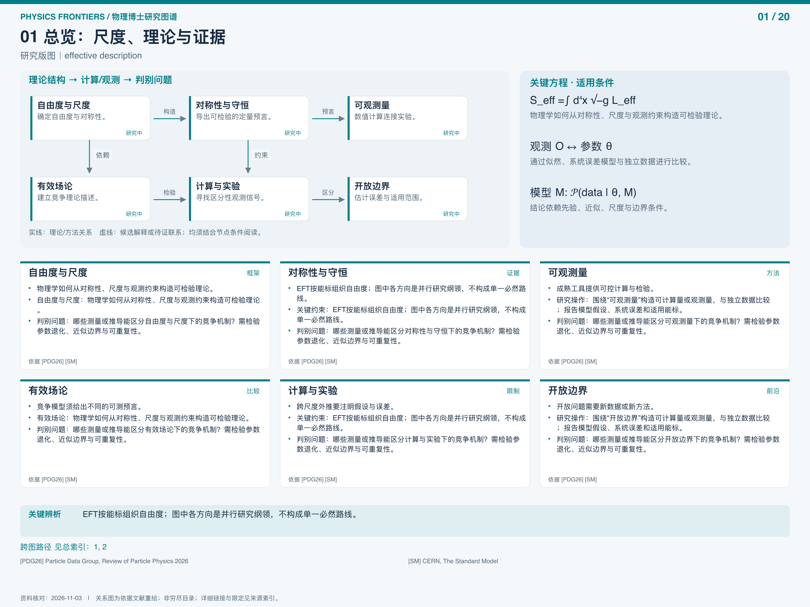

01 01 总览：尺度、理论与证据
研究版图｜effective description



来源与限定
EFT按能标组织自由度；图中各方向是并行研究纲领，不构成单一必然路线。
[PDG26] Particle Data Group, Review of Particle Physics 2026：用于核对本图所述理论框架、数据状态或研究方法；相关推断以图内辨析为准。
[SM] CERN, The Standard Model：用于核对本图所述理论框架、数据状态或研究方法；相关推断以图内辨析为准。